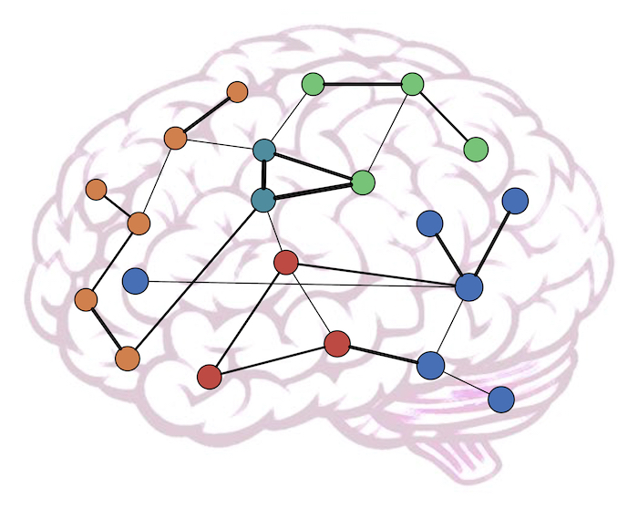

Tommaso Menara
PhD StudentDepartment of Mechanical Engineering |
|  | Research Interests
|
Selected Publications
IEEE Trans. Contr. Netw. Sys. Cell Reports IEEE Trans. Aut. Contr.
Contact
E-mail: tomenara[at]engr[dot]ucr[dot]edu
Skype: tommasomenara